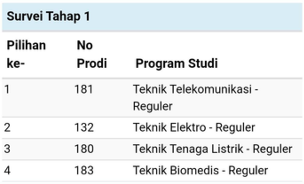

Gimana ceritanya bisa
masuk teknik telekomunikasi
gimana yaaaa
Karna emang mau
Jadi waktu masih TPB Hasto tiap survey selalu milih ET walaupun diakhir sempet hampir belok ke EL :D tpi akhirnya ttp pilih ET dan akhirnya keterima yey, proud to be anak ET gilss

Bukti Nyata
Hasto Anaknya ET bgt
OFFICIALLY
ANAK ET
ANAK ET